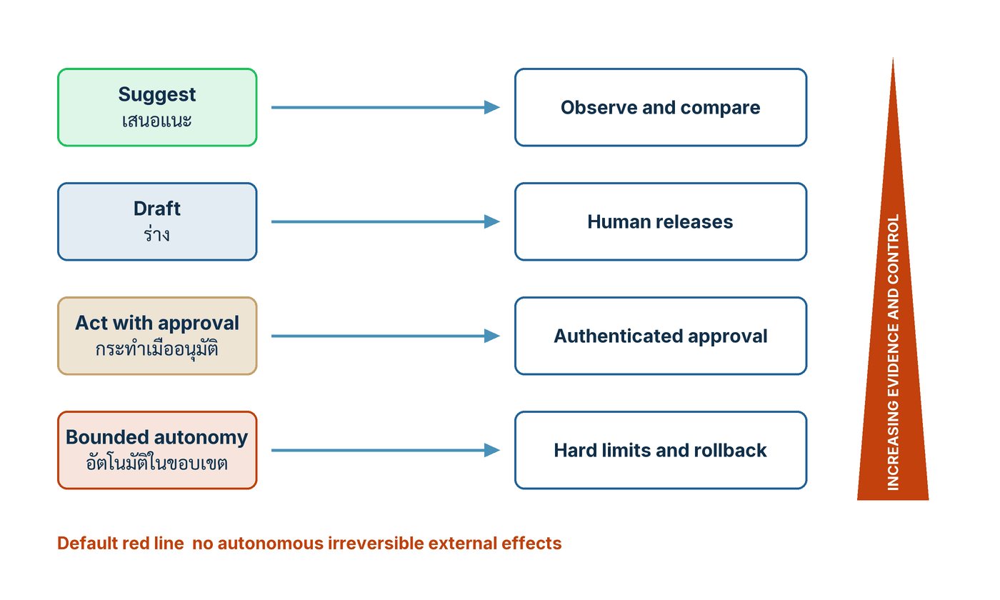

ในบทความนี้
- หลักฐานเตือนว่าไม่มี workflow สากล — ค่าเฉลี่ยเดียวออกแบบงานให้ทุกคนไม่ได้
- สี่งานวิจัย อ่านให้ครบทุกคอลัมน์ — ประชากร การเปรียบเทียบ ผลลัพธ์ ขอบเขต
- Jagged technology frontier — ในขอบเขตดีขึ้น นอกขอบเขตแย่ลง และขอบเขตขยับ
- บันไดอำนาจสี่ขั้น การควบคุมที่ต้องคู่กัน และเส้นแดงตั้งต้น
- เวิร์กช็อป วัดสามแขน — คนล้วน AI ล้วน คนบวก AI แยกตามประสบการณ์
- รักษาเส้นทางสร้างทักษะ — ถ้า AI รับงานที่เคยฝึกมือใหม่ไปหมด
- ตัวชี้วัดสำคัญพร้อมช่อง Scorecard และรูปแบบความล้มเหลว
- ก้าวต่อไป — จากหลักฐานสู่การวางอำนาจ และสัญญาประชาคมของงาน
In this post
- The evidence warns against a universal workflow — one average cannot design work for everyone
- Four studies, read across every column — population, comparison, result, boundary
- The jagged technology frontier — better inside, worse outside, and the boundary moves
- The four-rung authority ladder, the controls that must sit beside it, and the default red line
- The working session: measure three arms — human-only, AI-only, human plus AI, by experience
- Preserve the path that builds skill — when AI takes the cases that used to train novices
- Metrics that matter with a Scorecard column, and the failure patterns
- The road ahead — from evidence to authority, and the compact that governs work
🤔 ถ้า AI ช่วยมือใหม่ได้ +34% แต่มือเก๋าแทบไม่เปลี่ยน องค์กรควรออกแบบ workflow เดียวให้ทุกคนไหม?[1]
ตอนที่แล้ว Human in the Loop Is Not a Design จบด้วยข้อเสนอเชิงโครงสร้าง ว่ากระบวนงานที่ออกแบบดีต้องแยกงานเป็นสี่เลนที่ทำงานประสานกัน คือ เป้าหมายและวิจารณญาณ · การสร้างและวิเคราะห์ · การควบคุมเชิงโครงสร้าง · การตรวจสอบและกู้คืน สิ่งที่ค้างไว้คือคำถามที่ยากกว่า — แล้วหลักฐานบอกว่าควรวางคนไว้ตรงไหน และเรารู้ได้อย่างไรว่าวางถูก
คำตอบสั้น ๆ คือ หลักฐานที่มีอยู่ไม่ได้บอกว่า AI "ช่วย" หรือ "ไม่ช่วย" มันบอกว่าผลต่างกันมากจนออกแบบกระบวนงานเดียวให้ทุกคนไม่ได้ จึงอย่ายืมค่าเฉลี่ยของบริษัทอื่นมาตัดสินใจ ให้วัดสามแขนบนงานจริงของเราเอง คือคนล้วน AI ล้วน และคนบวก AI แยกผลตามระดับประสบการณ์ แล้วเอาหลักฐานนั้นไปวางอำนาจของระบบบนบันไดสี่ขั้น — เสนอแนะ ร่าง กระทำเมื่ออนุมัติ อัตโนมัติในขอบเขต — โดยมีเส้นแดงตั้งต้นหนึ่งเส้นที่ไม่ข้าม
1. หลักฐานเตือนว่าไม่มี workflow สากล
บทที่ 4 ของหนังสือเปิดด้วยประโยคที่ใช้เป็นบททดสอบของทุกโครงการ AI ได้: "Human in the loop is not a design. It becomes a control only when the person has evidence time competence and authority to disagree."[2] — การมีมนุษย์อยู่ในลูปยังไม่ใช่การออกแบบ มันกลายเป็นการควบคุมก็ต่อเมื่อคนคนนั้นมีหลักฐาน มีเวลา มีความสามารถ และมีอำนาจที่จะไม่เห็นด้วย ขาดข้อใดข้อหนึ่ง ผู้ตรวจก็เป็นเพียงด่านพิธีกรรม ย่อหน้าถัดมาสั้นและตรงกว่านั้นอีก: "Evidence warns against a universal workflow."[2] ฟังดูถ่อมตัว แต่เป็นข้อจำกัดเชิงออกแบบที่แข็งมาก เพราะแปลว่าแม่แบบ workflow ที่ที่ปรึกษาเอามาขายหรือที่บริษัทแม่ส่งมาให้ใช้ทั้งเครือ ไม่มีทางถูกต้องโดยอัตโนมัติสำหรับงานของเรา
ค่าเฉลี่ยหนึ่งตัวออกแบบงานให้สองกลุ่มไม่ได้
งานภาคสนามที่ติดตามพนักงานบริการลูกค้า 5,179 คน ในบริษัทเดียว อาศัยการทยอยเปิดใช้ผู้ช่วยสนทนา (staggered rollout) เพื่อเทียบคนที่ได้ใช้เครื่องมือแล้วกับคนที่ยังไม่ได้ใช้ รายงานว่าเรื่องที่ปิดได้ต่อชั่วโมงเพิ่มขึ้นเฉลี่ย 14 เปอร์เซ็นต์ แต่บรรทัดถัดไปบอกว่ากลุ่มประสบการณ์น้อยและทักษะต่ำเพิ่มขึ้น 34 เปอร์เซ็นต์ ขณะที่กลุ่มเชี่ยวชาญและทักษะสูงที่สุดแทบไม่เปลี่ยน[1]
ค่าเฉลี่ย 14 เปอร์เซ็นต์จึงไม่ใช่ผลของ "พนักงานหนึ่งคน" แต่เป็นผลรวมของประชากรที่ตอบสนองต่อเครื่องมือเดียวกันคนละแบบ และเป็นตัวเลขของบริษัทหนึ่ง กระบวนงานหนึ่ง ช่วงเวลาหนึ่ง ไม่ใช่ค่าประมาณผลิตภาพสากล ผลเชิงออกแบบตรงไปตรงมา — ออกแบบตามมือใหม่ เราจะเพิ่มขั้นที่ไม่จำเป็นให้มือเก๋าจนงานช้าลง ออกแบบตามมือเก๋า เราจะปล่อยมือใหม่ทำงานโดยไม่มีนั่งร้านที่เขาต้องการ และทั้งสองกรณี ค่าเฉลี่ยรวมจะดูดีพอที่จะทำให้ไม่มีใครสังเกตเห็น
หลักปฏิบัติสี่ข้อแรกของบทนี้
- แยกงานในระดับการตัดสินใจ — ออกแบบ Task ที่สร้างผลลัพธ์ ไม่ทำตำแหน่งงานทั้งตำแหน่งให้เป็นอัตโนมัติ นี่คือ การแยกงานเป็นภารกิจย่อย (task decomposition)
- วางคนในจุดที่วิจารณญาณเปลี่ยนผล — ใช้ผู้เชี่ยวชาญกับเป้าหมาย ข้อยกเว้น คำมั่น และความกำกวม
- อย่าใช้สมาธิมนุษย์บังคับสิ่งที่ซอฟต์แวร์บังคับได้ — สิทธิ์ Schema และวงเงินควรเป็น Hard Control
- ออกแบบการตรวจสอบเป็นกำลังการผลิต — ระบุความสามารถของผู้ตรวจ หลักฐาน เวลา ขนาดคิว และอำนาจปฏิเสธ ให้ครบทั้งห้า
ข้อที่ห้าคือ รักษาเส้นทางสร้างทักษะ ซึ่งผมยกไปทั้งหัวข้อในข้อ 6 เพราะเป็นข้อที่องค์กรมองข้ามบ่อยที่สุด
2. สี่งานวิจัย อ่านให้ครบทุกคอลัมน์
เวลามีคนยกงานวิจัยขึ้นมาในห้องประชุม สิ่งที่หายไปเกือบทุกครั้งคือคอลัมน์ที่บอกว่า "ใครถูกวัด" "เทียบกับอะไร" และ "ผลนี้ใช้ไม่ได้เมื่อไร" ตารางนี้คือสี่งานที่หนังสืออ้างในบทนี้ กางให้เห็นครบหกคอลัมน์ และคอลัมน์สุดท้ายคือคอลัมน์ที่ผมอยากให้อ่านก่อนคอลัมน์ผลลัพธ์
| Study | Setting | Denominator | Comparison | Result | Boundary |
|---|---|---|---|---|---|
| Brynjolfsson, Li & Raymond[1] | งานบริการลูกค้าจริง บริษัทเดียว | พนักงาน 5,179 คน | ช่วงที่ได้ใช้เครื่องมือ เทียบช่วงที่ยังไม่ได้ใช้ | เรื่องที่ปิดได้ต่อชั่วโมงเฉลี่ยเพิ่ม 14% · กลุ่มประสบการณ์น้อยและทักษะต่ำเพิ่ม 34% · กลุ่มเชี่ยวชาญสูงแทบไม่เปลี่ยน | บริษัทเดียว กระบวนงานเดียว ช่วงเวลาเดียว ไม่ใช่ค่าประมาณผลิตภาพสากล |
| Dell'Acqua และคณะ[4] | ทดลองแบบลงทะเบียนล่วงหน้า งานที่ปรึกษาจำลองที่สร้างร่วมกับ BCG | ที่ปรึกษา 758 คน | สุ่มเข้าสามกลุ่ม — ไม่ใช้ AI · GPT-4 · GPT-4 พร้อมคำแนะนำเขียน prompt | งาน 18 ชิ้นในขอบเขต: เสร็จมากกว่า 12.2% เร็วกว่า 25.1% คุณภาพดีขึ้นอย่างมีนัยสำคัญ · งานบริหารซับซ้อนหนึ่งชิ้นนอกขอบเขต: โอกาสตอบถูกน้อยกว่า 19% | งานจำลอง ไม่ใช่งานลูกค้าจริง ประชากรเดียว โมเดลรุ่นเดียว และขอบเขตนั้นขยับ |
| Noy & Zhang[5] | ทดลองออนไลน์แบบลงทะเบียนล่วงหน้า งานเขียนเชิงวิชาชีพที่มีขอบเขตจำกัด | มืออาชีพระดับปริญญาตรีขึ้นไป 453 คน | สุ่มให้ครึ่งหนึ่งได้ใช้ ChatGPT อีกครึ่งไม่ได้ใช้ | เวลาเฉลี่ยที่ใช้ลดลง 40% และคุณภาพที่ผู้ประเมินให้คะแนนเพิ่มขึ้น 18% | งานสั้นและโมเดลรุ่นหนึ่ง ไม่ได้พิสูจน์ผลระยะยาวระดับองค์กร |
| Vaccaro, Almaatouq & Malone[6] | Meta-analysis แบบลงทะเบียนล่วงหน้า รวมงานหลายสาขา | 106 การทดลอง 370 ค่าขนาดผล จากงานที่ตีพิมพ์ 1 ม.ค. 2020 – 30 มิ.ย. 2023 | ทุกงานต้องรายงานครบสามแขน คือคนล้วน AI ล้วน และคนบวก AI | เฉลี่ยแล้วคนบวก AI แย่กว่าฝ่ายที่เก่งกว่าเมื่ออยู่เดี่ยว (g = −0.23) แต่ดีกว่าคนล้วน (g = 0.64) · งานตัดสินใจติดลบอย่างมีนัยสำคัญ (g = −0.27) | ความต่างระหว่างงานที่รวมมาสูงมาก และวรรณกรรมจบที่มิถุนายน 2023 |
สิ่งที่ตารางนี้ห้ามให้ทำ
ห้ามคำนวณข้ามงาน ทั้งสี่งานมีประชากร งาน โมเดล และตัววัดผลคนละอย่าง การเอามาเฉลี่ยรวมหรือพูดว่า "งานวิจัยบอกว่า AI เพิ่มผลิตภาพ 14 ถึง 40 เปอร์เซ็นต์" ไม่มีความหมายทางสถิติ เพราะ 14 เปอร์เซ็นต์คือเรื่องที่ปิดได้ต่อชั่วโมงในศูนย์บริการลูกค้า ส่วน 40 เปอร์เซ็นต์คือเวลาที่ใช้ต่อชิ้นงานเขียนสั้น และให้ระวังตัวเลขคุณภาพของ Dell'Acqua เป็นพิเศษ — บทคัดย่อฉบับตีพิมพ์เขียนว่าคุณภาพ "ดีขึ้นอย่างมีนัยสำคัญ" โดยไม่ได้ให้ตัวเลขเปอร์เซ็นต์[4] ตัวเลข "คุณภาพสูงขึ้นกว่า 40 เปอร์เซ็นต์" ที่วนอยู่ในบทความสรุปหลายชิ้นมาจากฉบับ working paper ปี 2023 ผมยืนยันไม่ได้จากตัวบทที่ตีพิมพ์ จึงไม่ใช้
ผลบวกและผลลบของ meta-analysis เป็นจริงพร้อมกัน และอยู่คนละที่ในเอกสาร ค่า g = −0.23 (คนบวก AI แย่กว่าฝ่ายที่เก่งกว่าเมื่ออยู่เดี่ยว) อยู่ในบทคัดย่อ ส่วน g = 0.64 (คนบวก AI ดีกว่าคนล้วน) อยู่ในส่วนผลการวิเคราะห์[6] การอ้างเพียงครึ่งเดียวคือวิธีทำให้งานชิ้นนี้พูดสิ่งที่มันไม่ได้พูด ครึ่งลบเตือนว่าอย่าคิดว่าเอาคนกับ AI มาต่อกันแล้วจะดีที่สุดเสมอ ครึ่งบวกเตือนว่าอย่าล้มเลิกการทำงานร่วมกันเพียงเพราะเห็นเครื่องหมายลบ และงานตัดสินใจเลือกจากตัวเลือกจำกัดคือกลุ่มที่ยากที่สุด ติดลบที่ g = −0.27 ขณะที่งานสร้างสรรค์เนื้อหาได้ประโยชน์มากกว่าอย่างมีนัยสำคัญ
3. Jagged technology frontier — ขอบเขตที่ขรุขระ และขยับ
งานของ Dell'Acqua และคณะให้ภาษาที่มีประโยชน์ที่สุดสำหรับคนออกแบบกระบวนงาน นั่นคือคำว่า jagged technology frontier หรือ ขอบเขตความสามารถที่ขรุขระ — คำนี้เป็นของงานวิจัยชิ้นนั้น ไม่ใช่ของหนังสือ ความหมายคือความสามารถของโมเดลไม่ได้เรียงตัวเป็นเส้นตรงตามระดับ "ความยาก" ที่มนุษย์รู้สึก งานสองชิ้นที่คนมองว่ายากพอกันอาจอยู่คนละฝั่งของขอบเขต ชิ้นหนึ่งโมเดลทำได้ดีเกินคาด อีกชิ้นทำพังอย่างมั่นใจ และไม่มีวิธีเดาจากภายนอกว่าชิ้นไหนอยู่ฝั่งไหน — ต้องทดสอบเท่านั้น การทดลองออกแบบมาแสดงจุดนี้โดยตรง งาน 18 ชิ้นถูกเลือกให้อยู่ในขอบเขตและผลออกมาดีทั้งสามด้าน ส่วนงานบริหารซับซ้อนอีกหนึ่งชิ้นถูกเลือกให้อยู่นอกขอบเขต และกลุ่มที่ใช้ AI มีโอกาสตอบถูกน้อยกว่ากลุ่มที่ไม่ใช้ถึง 19 เปอร์เซ็นต์[4] นั่นคืองานเดียว ไม่ใช่ชุดงาน — แต่งานเดียวก็พอ เพราะประเด็นไม่ใช่ "แย่ลงกี่เปอร์เซ็นต์" แต่คือ "เครื่องมือเดียวกัน ประชากรเดียวกัน ผลกลับทิศได้"
💡 สิ่งที่ทำให้ตัวเลข −19% น่ากลัวกว่าตัวเลขบวกทั้งหมดรวมกัน ไม่ใช่ขนาดของมัน แต่คือความจริงที่ว่าผู้เข้าร่วมการทดลองไม่รู้ตัวว่ากำลังทำงานที่อยู่นอกขอบเขต งานอ่านเหมือนงานปกติ คำตอบของโมเดลอ่านเหมือนคำตอบปกติ และความมั่นใจของภาษาไม่ได้ลดลงตามความถูกต้องเลย นี่คือเหตุผลที่ "ให้คนตรวจ" อย่างเดียวไม่พอ — คนที่ตรวจต้องมีหลักฐานว่างานชิ้นนี้อยู่ฝั่งไหนของขอบเขต ไม่ใช่แค่มีเวลาอ่าน
ทั้งสามการทดลองใช้โมเดลรุ่นเดียวทั้งสิ้น — GPT-4 สำหรับงานที่ปรึกษา ChatGPT ต้นปี 2023 สำหรับงานเขียน และผู้ช่วยที่สร้างบนข้อมูลรุ่นปี 2021 สำหรับศูนย์บริการลูกค้า ผลทุกตัวจึงเป็นภาพนิ่ง ณ ขณะนั้น ไม่ใช่คำอธิบายความสามารถของโมเดลวันนี้ ข้อสรุปเชิงปฏิบัติคือผลการทดสอบขอบเขตต้องมีวันหมดอายุ ทีมที่ผมทำงานด้วยจะเขียนกำกับทุกครั้งว่าใช้โมเดลรุ่นไหน ชุดทดสอบชุดไหน และจะทดสอบซ้ำเมื่อใด เพราะการเปลี่ยนรุ่นโมเดลคือการเปลี่ยนแผนที่ ไม่ใช่การอัปเดตเวอร์ชัน
สัญญาณสี่ข้อที่ผมใช้ตรวจว่างานหนึ่งกำลังเข้าใกล้ขอบขรุขระ — เป็นเกณฑ์เชิงคุณภาพของผมเอง ไม่ใช่ข้อค้นพบของงานวิจัย — คือ ต้องอาศัยข้อมูลที่มีเฉพาะในหัวคน · คำตอบที่ถูกขึ้นกับบริบทองค์กรที่ไม่มีในเอกสารสาธารณะ · ต้องชั่งน้ำหนักระหว่างเป้าหมายที่ขัดกันโดยไม่มีน้ำหนักประกาศไว้ · ความผิดพลาดตรวจพบได้ช้ากว่าหนึ่งรอบการทำงาน เข้าเกณฑ์ตั้งแต่สองข้อ ผมจะไม่ให้งานนั้นขึ้นเกินขั้น "ร่าง" จนกว่าจะมีหลักฐานเฉพาะของงานนั้นเอง
4. บันไดอำนาจ — อำนาจต้องสอดคล้องกับผลกระทบ
เมื่อยอมรับแล้วว่าผลของ AI ต่างกันตามคน ตามงาน และตามเวลา คำถามถัดไปคือจะให้ระบบมีอำนาจแค่ไหน หนังสือตอบด้วยบันไดสี่ขั้นที่จับคู่ อำนาจตัดสินใจ (decision authority) เข้ากับ การควบคุม ที่ต้องมีคู่กัน
{kind=link}

อ่านรูปจากซ้ายไปขวาทีละแถว ฝั่งซ้ายคือขั้นอำนาจที่เรามอบให้ระบบ ฝั่งขวาคือการควบคุมที่ต้องมีอยู่จริงก่อนจะมอบอำนาจขั้นนั้น ลิ่มสีแดงบอกว่าเมื่อไต่ขึ้นทีละขั้น หลักฐานและการควบคุมต้องเพิ่มขึ้นตาม ไม่ใช่คงที่
| Rung | ขั้นอำนาจ | Control (ถ้อยคำของหนังสือ) | หลักฐานที่ผมขอเห็นก่อนขึ้นขั้นนี้ |
|---|---|---|---|
| Suggest | เสนอแนะ | Observe and compare | ผลการวัดสามแขนบนงานจริง แยกตามประสบการณ์ พร้อมค่าฐานของวิธีทำงานเดิม |
| Draft | ร่าง | Human releases | อัตราผ่านครั้งแรกและนาทีที่ผู้ตรวจใช้แก้ต่อชิ้น พร้อมหลักฐานว่าผู้ตรวจมีเวลาและอำนาจปฏิเสธจริง |
| Act with approval | กระทำเมื่ออนุมัติ | Authenticated approval | การอนุมัติที่ยืนยันตัวตนได้ ผูกกับคนที่มีสิทธิ์ พร้อมเหตุผลอนุมัติและ Override ที่อ่านย้อนได้ |
| Bounded autonomy | อัตโนมัติในขอบเขต | Hard limits and rollback | ขอบเขตที่บังคับด้วยซอฟต์แวร์ ไม่ใช่ด้วยคำสั่ง บวกการย้อนกลับที่ซ้อมแล้ว และเวลาตรวจพบที่วัดได้ |
สามคอลัมน์แรกเป็นของหนังสือคำต่อคำ คอลัมน์สุดท้ายเป็นเกณฑ์ของผมเอง — สิ่งที่หนังสือรับประกันคือการจับคู่ระหว่างขั้นกับการควบคุม ส่วนคำถามว่าหลักฐานเท่าไรจึงพอ เป็นเรื่องของแต่ละองค์กร
ข้อควรระวังที่เจอบ่อยที่สุดคือคนเอาบันไดนี้ไปปนกับบันไดอีกอัน บันไดสี่ขั้นนี้พูดถึงอำนาจเทียบกับระดับผลกระทบ (consequence) ของงานหนึ่งงาน ไม่ใช่เส้นทางการเติบโตขององค์กร และไม่ใช่ระดับวุฒิภาวะห้าระดับ — สำรวจ ช่วยงาน บริหารอย่างเป็นระบบ บูรณาการ ปฏิบัติการแบบ AI-core — ที่เราคุยกันใน Five Maturity Levels องค์กรที่วุฒิภาวะสูงยังต้องมีงานจำนวนมากค้างอยู่ที่ขั้น "เสนอแนะ" ตลอดไป เพราะระดับผลกระทบของงานนั้นไม่ยอมให้ขึ้นสูงกว่านั้น การไต่ทั้งพอร์ตขึ้นพร้อมกันเพราะ "เราโตแล้ว" คือความผิดพลาดที่บันไดนี้ถูกวาดขึ้นมาเพื่อป้องกันโดยตรง
5. เวิร์กช็อป — วัดสามแขนบนงานจริง
ทั้งบทความมาบรรจบที่หัวข้อนี้ ประโยคที่หนังสือใช้ปิดย่อหน้าหลักฐานคือ "The design lesson is to measure human-only, AI-only, and combined configurations for the actual task."[2] — ให้วัดค่าตั้งสามแบบบนงานจริง คำสำคัญคือ the actual task ไม่ใช่ benchmark ไม่ใช่ demo และไม่ใช่งานของบริษัทในกรณีศึกษา เมตริกที่ต้องเก็บให้ครบทุกแขนมีหกตัว และต้องใช้นิยามเดียวกันทั้งสามแขน มิฉะนั้นการเทียบจะไม่มีความหมาย: Cycle time ตั้งแต่งานเข้าจนจบจริง · อัตราผ่านครั้งแรก (first-pass yield) · อัตราความผิดพลาดรุนแรง เฉพาะที่หลุดถึงผู้รับ · อัตราข้อกล่าวอ้างไร้หลักฐาน · นาทีแก้ต่อชิ้น (correction minutes) แยกตาม Task · สัญญาณการสูญเสียโอกาสฝึก คือเคสที่เคยใช้ฝึกมือใหม่แต่ตอนนี้ไม่ผ่านมือใหม่แล้ว
| Arm | สิ่งที่รันจริง | Segment ที่ต้องรายงานแยก | Scorecard |
|---|---|---|---|
| Human-only | คนทำงานด้วยเครื่องมือเดิม ไม่มีโมเดลช่วย เป็นค่าฐานที่ทุกอย่างเทียบกลับมาหา | มือใหม่ · มือเก๋า | Value |
| AI-only | โมเดลทำจนจบโดยไม่มีคนแก้ระหว่างทาง เก็บผลไว้ดู ไม่ปล่อยออกสู่ผู้รับจริง | งานตัดสินใจ · งานสร้างเนื้อหา | Quality |
| Human + AI | รูปแบบที่จะใช้จริง ระบุให้ชัดว่าใครเห็นอะไรก่อน ใครเป็นผู้ปล่อย ผู้ตรวจได้เวลาเท่าไร | มือใหม่ · มือเก๋า และความคุ้นเคยกับเครื่องมือ | People |
สามแขนนี้ตอบคำถามคนละคำถาม แขนคนล้วนตอบว่า "ของเดิมดีแค่ไหนจริง ๆ" ซึ่งองค์กรส่วนใหญ่ไม่เคยวัด แขน AI ล้วนตอบว่า "เพดานของโมเดลบนงานนี้อยู่ตรงไหน" ซึ่งบอกว่าเราอยู่ในหรือนอกขอบเขตความสามารถ และแขนคนบวก AI ตอบว่า "รูปแบบที่จะใช้จริงดีกว่าอีกสองแบบหรือไม่" ซึ่ง meta-analysis เตือนไว้แล้วว่าคำตอบอาจเป็น "ไม่"[6]
จากหลักฐานสู่ขั้นบนบันได
เมื่อมีผลสามแขนแล้ว การวางขั้นอำนาจจะเลิกเป็นการถกเถียงและกลายเป็นการอ่านตาราง ตารางนี้เป็นของผม ไม่ใช่ของหนังสือ และตั้งใจให้ไม่มีตัวเลขเกณฑ์อยู่เลย เพราะเกณฑ์ต้องมาจากงานของแต่ละองค์กร
| หลักฐานที่มีอยู่ | ขั้นสูงสุดที่วางได้ | เงื่อนไขที่ต้องถอยลงหนึ่งขั้นทันที |
|---|---|---|
| ยังไม่มีผลสามแขน มีแต่ demo และความรู้สึกของทีม | เสนอแนะ | ห้ามขึ้นจนกว่าจะมีผลวัดจริง |
| มีผลสามแขนหนึ่งรอบ แยกตามประสบการณ์ และแขนคนบวก AI ชนะค่าฐาน | ร่าง | คุณภาพของกลุ่มมือเก๋าลดลงเทียบค่าฐาน หรือมือใหม่หยุดได้รับงานประเภทที่เคยฝึก |
| เพิ่มหลักฐานว่าผู้ตรวจมีเวลา หลักฐาน และอำนาจปฏิเสธจริง พร้อมเหตุผล Override ที่อ่านย้อนได้ | กระทำเมื่ออนุมัติ | อัตราอนุมัติเข้าใกล้ร้อยเปอร์เซ็นต์พร้อมนาทีตรวจที่ลดลง — คือการกดผ่าน ไม่ใช่คุณภาพ |
| เพิ่มขอบเขตที่บังคับด้วยซอฟต์แวร์ การย้อนกลับที่ซ้อมแล้ว และเวลาตรวจพบที่วัดได้ | อัตโนมัติในขอบเขต | เกิดการกระทำนอกขอบเขตแม้ครั้งเดียว หรือการซ้อมย้อนกลับเก่ากว่ารอบที่ประกาศไว้ |
เวิร์กช็อป Workflow teardown and rebuild เจ็ดขั้น
- กำหนดผลลัพธ์ ลูกค้า ผลกระทบ และค่าฐาน
- แยก Workflow เป็นการตัดสินใจและงานที่สร้างหลักฐาน
- กำกับแต่ละ Task ว่าเป็นของมนุษย์ AI ระบบ Deterministic หรือร่วมกัน พร้อมเหตุผล
- ออกแบบจุดส่งต่อ บริบท สิทธิ์ เกณฑ์ และเส้นทางความไม่แน่นอน
- ทดสอบกรณีปกติ กรณีขอบ และกรณีล้มเหลวหรือถูกโจมตี อย่างละหนึ่ง
- ประมาณ Cycle Time กำลังผู้ตรวจ ต้นทุน และภาระกู้คืน
- เลือกการทดลองขอบเขตแคบ และตั้งเจ้าของ Workflow
ตัวอย่างที่หนังสือใช้ประกอบคือ LannaBuild Engineering (กรณีสมมติจากหนังสือ) ซึ่งเดิมสั่งให้ AI เขียนข้อเสนอประมูลทั้งฉบับ แล้วให้วิศวกรอาวุโสอ่านร่างยาวภายใต้เส้นตาย — รูปแบบที่ผู้ตรวจไม่มีทั้งเวลาและหลักฐาน จึงเป็นด่านพิธีกรรมโดยสมบูรณ์ การออกแบบใหม่ย้ายจุดที่ AI ทำงานขึ้นไปต้นน้ำ: AI แยกข้อกำหนดและสร้าง Compliance Matrix ที่ย้อนดูแหล่งได้ ระบบ Deterministic ตรวจวันที่ ยอดรวม หน่วย และเอกสารแนบบังคับ ผู้เชี่ยวชาญเขียนข้อยกเว้นทางเทคนิคเอง AI ประกอบเฉพาะโมดูลที่อนุมัติแล้ว เจ้าของฝ่ายพาณิชย์และกฎหมายอนุมัติราคาและคำมั่น ข้อความที่อ้างโดยไม่มีหลักฐานถูกระงับแทนที่จะถูกไฮไลต์ไว้ให้คนตามอ่าน และคำขอชี้แจงกับเหตุผลที่แพ้ประมูลถูกเก็บเข้าชุดประเมิน กรณีนี้ไม่มีตัวเลขในหนังสือ และผมจะไม่ใส่ให้ — คุณค่าอยู่ที่รูปทรงของการแบ่งงาน ไม่ใช่ผลลัพธ์สมมติ
6. รักษาเส้นทางสร้างทักษะ
💡 มุมมองของผม: หลักปฏิบัติข้อที่ห้าของบทนี้เงียบที่สุดและแพงที่สุดถ้าลืม — Preserve skill formation "Decide how novices build judgment if AI performs the routine cases that once trained them."[2] รักษาเส้นทางสร้างทักษะ หาก AI รับงานพื้นฐานไป ต้องตอบให้ได้ว่าคนใหม่จะสะสมวิจารณญาณจากไหน ผมเน้นคำว่า ตัดสินใจ ในประโยคนั้น เพราะหนังสือไม่ได้ห้ามไม่ให้ AI ทำงานพื้นฐาน มันบอกว่าถ้าจะให้ทำ ต้องมีคนตัดสินใจเรื่องเส้นทางเรียนรู้ทดแทนในเอกสารฉบับเดียวกัน ไม่ใช่ปีหน้า
เหตุผลที่ข้อนี้ผูกกับหัวข้อที่ 1 คือกลไกเบื้องหลังตัวเลข 34 เปอร์เซ็นต์ ผู้เขียนงานวิจัยเสนอคำอธิบายว่าเครื่องมือช่วยกระจายแนวปฏิบัติของพนักงานที่เก่งที่สุดออกไปสู่คนอื่น แต่ระบุเองว่าเป็น suggestive evidence คือหลักฐานเชิงชี้แนะ ไม่ใช่ข้อสรุปที่พิสูจน์แล้ว[1] ผมจึงไม่พูดว่า AI "ถ่ายทอดความรู้ของผู้เชี่ยวชาญ" ราวกับเป็นข้อเท็จจริงที่ยืนยันแล้ว สิ่งที่พูดได้อย่างมั่นใจคือกลุ่มมือใหม่ดีขึ้นมากที่สุด ส่วนทำไม ยังเป็นคำถามเปิด
แต่ต่อให้กลไกยังไม่ชัด ผลข้างเคียงเชิงองค์กรก็ชัดพอจะออกแบบรับได้ งานที่เคยเป็นสนามฝึกของคนใหม่ — เคสง่าย ๆ ที่ทำซ้ำจนเริ่มมองออกว่าอะไรผิดปกติ — คืองานกลุ่มเดียวกับที่ AI ทำได้ดีที่สุดและถูกยกให้ก่อนเสมอ ผลคือมือใหม่กระโดดจากไม่มีประสบการณ์ไปสู่การตรวจงานที่ยากที่สุดโดยตรง ข้ามช่วงที่เคยสร้างสัญชาตญาณให้เขา และองค์กรมักไม่รู้ตัวจนอีกหลายปีถัดมา เมื่อพบว่าไม่มีใครโตขึ้นมาเป็นผู้ตรวจที่ดีได้เลย ผมสรุปให้ทีมฟังด้วยประโยคเดียวเสมอ: งานพื้นฐานไม่ได้มีต้นทุนอย่างเดียว มันมีผลผลิตร่วมด้วย และผลผลิตร่วมนั้นคือคนที่ตรวจงานเป็นในรุ่นถัดไป
สิ่งที่ทำได้ทันทีมีสามอย่าง หนึ่ง ใส่ สัญญาณการสูญเสียโอกาสฝึก เข้าไปในตัวชี้วัดของ workflow ตั้งแต่วันแรก สอง สงวนสัดส่วนหนึ่งของเคสปกติไว้ให้คนใหม่ทำเองแม้ระบบจะทำได้ โดยถือเป็นต้นทุนการฝึกที่ประกาศไว้ ไม่ใช่ความไร้ประสิทธิภาพที่ต้องกำจัด และสาม ให้คนใหม่ทำงานคู่กับผู้ตรวจในเคสที่ระบบตอบไม่ชัด เพราะจุดที่ระบบไม่แน่ใจคือจุดที่สอนได้ดีที่สุด
7. ตัวชี้วัดสำคัญ
หนังสือให้รายการตัวชี้วัดของบทนี้ไว้ยาวหนึ่งย่อหน้า ผมกางออกเป็นตารางและเติมช่อง Scorecard ตามธรรมเนียมของซีรีส์นี้ เพื่อให้เห็นว่าตัวชี้วัดแต่ละตัวไปตอบช่องไหนของกระดานคะแนนองค์กร และเพื่อไม่ให้ทั้ง workflow ถูกวัดด้วยมิติเดียวคือความเร็ว
| Metric | สัญญาณเตือน | Scorecard |
|---|---|---|
| Cycle Time ตั้งแต่ต้นจนจบ และผลลัพธ์ลูกค้า | วัดเฉพาะเวลาที่คนสัมผัสงาน หรือแดชบอร์ดภายในดีขึ้นแต่การติดต่อซ้ำไม่ลด | Value |
| อัตราผ่านครั้งแรก | ดีขึ้นพร้อมกับ Rework ปลายน้ำที่เพิ่มขึ้น | Quality |
| ความผิดพลาดรุนแรงและข้อกล่าวอ้างไร้หลักฐานที่หลุดถึงผู้รับ | เป็นศูนย์ทั้งที่ไม่มีเครื่องมือใดตรวจพบได้ หรือถูกไฮไลต์แทนที่จะถูกระงับ | Quality |
| ความแม่นของ Escalation | ส่งต่อทุกอย่างเพื่อความปลอดภัย จนการส่งต่อหมดความหมาย | Quality |
| นาทีแก้ต่อชิ้นแยกตาม Task และคิวผู้ตรวจ | นาทีตรวจลดลงพร้อมปริมาณงานที่เพิ่ม — คือการกดผ่าน ไม่ใช่ประสิทธิภาพ | People |
| เหตุผลอนุมัติและ Override | ช่องเหตุผลว่างเปล่า หรือมีคำตอบสำเร็จรูปคำเดียวทั้งองค์กร | Learning |
| Proficiency และสัญญาณการสูญเสียโอกาสฝึก | วัดด้วยชั่วโมงอบรมแทนการสาธิตงานจริง และไม่มีใครวัดโอกาสฝึกเลย | Learning |
| สัดส่วนอัตโนมัติแยกตามผลกระทบ และเวลากู้คืน | งานผลกระทบสูงไต่ขั้นพร้อมงานผลกระทบต่ำ และเวลากู้คืนเป็นค่าประมาณที่ไม่เคยซ้อม | Risk |
| คุณค่าหลังหักค่าโมเดล Control การตรวจ Incident และ Rework | รายงานผลประหยัดต้นน้ำโดยไม่หักเวลาผู้ตรวจและงานแก้ปลายน้ำ | Economics |
รูปแบบความล้มเหลว
เจ็ดข้อแรกเป็นรายการของหนังสือ สามข้อสุดท้ายผมเติมจากข้อโต้แย้งของบทความนี้
- ทำกระบวนการเดิมให้เป็นอัตโนมัติโดยไม่แก้อะไรเลย — เร่งความเร็วของทางที่เดินผิดอยู่แล้ว
- ใช้ผู้เชี่ยวชาญที่ล้าคนเดียวเป็นผู้ตรวจทุกอย่าง — คอขวดที่ดูเหมือนการควบคุม
- อนุมัติแบบประทับตรา — มีลายเซ็นครบแต่ไม่มีการอ่าน
- ซ่อนความไม่แน่นอนไว้หลังภาษาที่ลื่นไหล — ยิ่งข้อความเรียบร้อย ยิ่งตรวจยาก
- เรียกใช้ Tool ก่อนตรวจสิทธิ์ — ระบบทำสิ่งที่ยังไม่มีใครอนุญาต
- ตัดงานระดับเริ่มต้นโดยไม่สร้างเส้นทางเรียนรู้ใหม่ — คือหัวข้อที่ 6 ทั้งหัวข้อ
- วัดความเร็วเฉพาะจุดขณะที่งานแก้ปลายน้ำเพิ่มขึ้น — ความเร็วเป็นของเรา งานแก้เป็นของคนอื่น
- ออกแบบ workflow เดียวให้ทุกคน (ข้อสังเกตของผม) — ค่าเฉลี่ยเดียวทำให้เชื่อว่ามีผู้ใช้แบบเดียว
- ใช้คะแนน benchmark แทนหลักฐานจากงานจริง (ข้อสังเกตของผม) — โดยเฉพาะ benchmark ภาษาอังกฤษกับงานภาษาไทย
- รายงานผลรวมโดยไม่แยกตามระดับทักษะ (ข้อสังเกตของผม) — วิธีที่แน่นอนที่สุดในการไม่เห็นทั้งประโยชน์และความเสียหาย
8. ก้าวต่อไป
ถ้าจะสรุปทั้งบทความเป็นการเปลี่ยนนิสัยอย่างเดียว ผมจะเลือกข้อนี้: เลิกถามว่า "AI ช่วยงานนี้ได้ไหม" แล้วเปลี่ยนเป็น "บนงานนี้ คนล้วนได้เท่าไร AI ล้วนได้เท่าไร คนบวก AI ได้เท่าไร และสามชุดนั้นต่างกันอย่างไรระหว่างมือใหม่กับมือเก๋า" คำถามแรกได้คำตอบเป็นความเห็น คำถามที่สองได้คำตอบเป็นหลักฐาน และหลักฐานคือสิ่งเดียวที่ใช้วางอำนาจบนบันไดได้อย่างมีเหตุผล
สิ่งที่ทำได้ในสัปดาห์หน้ามีสามอย่าง หนึ่ง เลือก workflow ที่ใช้โมเดลอยู่แล้วหนึ่งสาย แล้วเขียนลงกระดาษว่าตอนนี้อยู่ขั้นไหนในสี่ขั้น และมีหลักฐานอะไรรองรับ — คำตอบที่พบบ่อยที่สุดคือ "ขั้นสามแต่มีหลักฐานระดับขั้นหนึ่ง" สอง ออกแบบการวัดสามแขนของงานนั้นให้จบในหนึ่งหน้า โดยมีแขนภาษาไทยอยู่ด้วย และสาม ตรวจว่าเส้นแดงตั้งต้นถูกบังคับด้วยซอฟต์แวร์จริง หรือด้วยความเข้าใจร่วมกันของทีมเท่านั้น ส่วนคำถามที่บทความนี้เปิดทิ้งไว้ใหญ่กว่ากระบวนงาน — ถ้า AI รับงานที่เคยใช้ฝึกมือใหม่ไป องค์กรต้องตัดสินใจว่าคนจะเรียนรู้จากไหน และผลผลิตที่เพิ่มขึ้นจะถูกแบ่งกันอย่างไรระหว่างคุณค่าที่ส่งถึงลูกค้า คุณภาพ การเรียนรู้ ภาระงานที่ลดลง การเติบโต และผลตอบแทนทางการเงิน
🎯 สิ่งสำคัญที่ต้องจำ
- No universal workflow = ผลของ AI ต่างกันตามระดับทักษะและตามตำแหน่งของงานเทียบขอบเขตความสามารถ จึงออกแบบกระบวนงานเดียวให้ทุกคนไม่ได้
- +14% / +34% = ค่าเฉลี่ยและผลของกลุ่มมือใหม่จากพนักงาน 5,179 คนในบริษัทเดียว ไม่ใช่ตัวเลขสากล และฉบับผ่านการทบทวนรายงาน 5,172 คนกับ 15 เปอร์เซ็นต์
- Jagged frontier = งานในขอบเขตดีขึ้น งานนอกขอบเขตแย่ลง และมองจากภายนอกไม่ออกว่างานไหนอยู่ฝั่งไหน
- Meta-analysis = คนบวก AI ดีกว่าคนล้วนโดยเฉลี่ย แต่แพ้ฝ่ายที่เก่งกว่าเมื่ออยู่เดี่ยว และงานตัดสินใจคือกลุ่มที่ยากที่สุด
- Three arms = วัดคนล้วน AI ล้วน และคนบวก AI บนงานจริง ด้วยนิยามเมตริกเดียวกัน แล้วรายงานแยกตามประสบการณ์เสมอ
- Authority ladder = เสนอแนะ ร่าง กระทำเมื่ออนุมัติ อัตโนมัติในขอบเขต แต่ละขั้นต้องมีการควบคุมคู่กัน — เส้นแดงตั้งต้นคือไม่มีผลกระทบภายนอกที่ย้อนกลับไม่ได้แบบอัตโนมัติ
- Thai arm = English Benchmark ไม่ใช่หลักฐานว่าใช้ได้เท่าเทียมในภาษาไทย โปรโตคอลสามแขนจึงต้องมีแขนภาษาไทยบนงานจริงเสมอ
อ้างอิง
ตรวจสอบทุกแหล่งเมื่อ 5 กันยายน 2026 (เวลาประเทศไทย) · ป้ายหลักฐานสี่แบบ: Law ตัวบทกฎหมายหรือประกาศทางการ · Standard มาตรฐานหรือกรอบทางการที่เผยแพร่แล้ว · Study งานวิจัยหรือสัญญาณภาคสนาม · Synthesis การสังเคราะห์ของผู้เขียนหรือแหล่งที่ไม่ใช่งานวิจัย
- Study Erik Brynjolfsson, Danielle Li & Lindsey R. Raymond. Generative AI at Work — NBER Working Paper 31161 เมษายน 2023 ปรับปรุงพฤศจิกายน 2023 (DOI 10.3386/w31161). nber.org — เข้าถึง 2026-09-05. รองรับ: พนักงาน 5,179 คนในบริษัทเดียว การทยอยเปิดใช้แบบ staggered rollout ค่าเฉลี่ยเพิ่ม 14 เปอร์เซ็นต์ กลุ่มประสบการณ์น้อยเพิ่ม 34 เปอร์เซ็นต์ กลุ่มเชี่ยวชาญสูงแทบไม่เปลี่ยน และคำอธิบายเรื่องการกระจายแนวปฏิบัติที่ผู้เขียนระบุว่าเป็นหลักฐานเชิงชี้แนะ
- Synthesis Anirach Mingkhwan. AI Transformation as an Organizational Core — Bilingual Companion Playbook — บทที่ 4 หน้า 19–22 รูปที่ 5 หน้า 20 หน้า 48 และภาคผนวก D.3. ต้นฉบับของผู้เขียน ไม่มี URL สาธารณะ; ข้อมูลหลักฐาน ณ 5 กันยายน 2026. รองรับ: ประโยคเปิดบท คำเตือนว่าไม่มี workflow สากล สี่เลนที่ประสานกัน หลักปฏิบัติห้าประการ บันไดอำนาจสี่ขั้นและการควบคุมที่จับคู่กัน เส้นแดงตั้งต้น เวิร์กช็อปเจ็ดขั้น รายการตัวชี้วัด รูปแบบความล้มเหลว กรณีสมมติ LannaBuild Engineering และประโยคเรื่องการทดสอบภาษาไทยหน้า 48
- Study Erik Brynjolfsson, Danielle Li & Lindsey Raymond. Generative AI at Work — The Quarterly Journal of Economics ปีที่ 140 ฉบับที่ 2 (2025) หน้า 889–942 ออนไลน์ 4 กุมภาพันธ์ 2025. doi.org — เข้าถึง 2026-09-05 (หน้าสำนักพิมพ์ปฏิเสธการเข้าถึงอัตโนมัติ บรรณานุกรมและบทคัดย่อยืนยันจากทะเบียน Crossref). รองรับ: ฉบับผ่านการทบทวนโดยผู้ทรงคุณวุฒิรายงาน 5,172 คนและค่าเฉลี่ย 15 เปอร์เซ็นต์ และบทคัดย่อฉบับนี้ไม่มีตัวเลข 34 เปอร์เซ็นต์
- Study Fabrizio Dell'Acqua, Edward McFowland III, Ethan Mollick และคณะ. Navigating the Jagged Technological Frontier: Field Experimental Evidence of the Effects of Artificial Intelligence on Knowledge Worker Productivity and Quality — Organization Science ออนไลน์แบบ Articles in Advance 11 มีนาคม 2026 (DOI 10.1287/orsc.2025.21838, CC BY 4.0) เดิมคือ HBS Working Paper 24-013 กันยายน 2023. hbs.edu — เข้าถึง 2026-09-05. รองรับ: ที่ปรึกษา 758 คน การสุ่มสามกลุ่ม งาน 18 ชิ้นในขอบเขตซึ่งเสร็จมากกว่า 12.2 เปอร์เซ็นต์ เร็วกว่า 25.1 เปอร์เซ็นต์ คุณภาพดีขึ้นอย่างมีนัยสำคัญโดยไม่ระบุเปอร์เซ็นต์ งานนอกขอบเขตหนึ่งงานซึ่งโอกาสตอบถูกน้อยกว่า 19 เปอร์เซ็นต์ และคำว่า jagged technological frontier
- Study Shakked Noy & Whitney Zhang. Experimental evidence on the productivity effects of generative artificial intelligence — Science ปีที่ 381 ฉบับที่ 6654 (2023) หน้า 187–192. doi.org — เข้าถึง 2026-09-05 (หน้าสำนักพิมพ์ปฏิเสธการเข้าถึงอัตโนมัติ บรรณานุกรมยืนยันจากทะเบียน Crossref และบทคัดย่อจาก Europe PMC). รองรับ: มืออาชีพ 453 คน การสุ่มให้ครึ่งหนึ่งได้ใช้ ChatGPT บนงานเขียนที่มีขอบเขตจำกัด เวลาเฉลี่ยลดลง 40 เปอร์เซ็นต์ และคุณภาพที่ผู้ประเมินให้คะแนนเพิ่มขึ้น 18 เปอร์เซ็นต์
- Study Michelle Vaccaro, Abdullah Almaatouq & Thomas Malone. When combinations of humans and AI are useful: a systematic review and meta-analysis — Nature Human Behaviour ปีที่ 8 (2024) หน้า 2293–2303 เผยแพร่ 28 ตุลาคม 2024. nature.com — เข้าถึง 2026-09-05. รองรับ: 106 การทดลองและ 370 ค่าขนาดผลจากงานที่ตีพิมพ์ 1 มกราคม 2020 ถึง 30 มิถุนายน 2023 เงื่อนไขว่าทุกงานต้องรายงานครบสามแขน ค่า g = −0.23 ในบทคัดย่อ ค่า g = 0.64 ในส่วนผลการวิเคราะห์ และค่า g = −0.27 ของงานประเภทตัดสินใจ
🤔 If AI lifts novices by +34% while the most experienced barely change, should an organisation design one workflow for everybody?[1]
The previous post, Human in the Loop Is Not a Design, closed on a structural proposal: a well-designed workflow separates the work into four coordinated lanes — purpose and judgment · generation and analysis · structural control · verification and recovery. What it left standing was the harder question — what does the evidence say about where the person belongs, and how would we know we had put them in the right place?
The short answer is that the evidence we have does not say AI "helps" or "does not help". It says the effect varies so widely that one workflow cannot be designed for everyone. So do not borrow another company's average as your decision. Measure three arms on your own real task — human-only, AI-only, and human plus AI — with the results reported separately by experience level. Then use that evidence to place the system's authority on a four-rung ladder — suggest, draft, act with approval, bounded autonomy — with one default red line that is never crossed.
1. The Evidence Warns Against a Universal Workflow
Chapter 4 of the playbook opens with a sentence that works as a test for any AI project: "Human in the loop is not a design. It becomes a control only when the person has evidence time competence and authority to disagree."[2] — having a person in the loop is not yet a design; it becomes a control only when that person holds evidence, time, competence and the authority to disagree. Take away any one of the four and the reviewer is a ceremonial gate. The paragraph that follows is shorter and blunter still: "Evidence warns against a universal workflow."[2] It sounds modest, but it is a very hard design constraint, because it means the workflow template a consultancy sells you, or the one head office sends down for the whole group, cannot be automatically right for your work.
One average cannot design work for two groups
A field study following 5,179 customer-support agents at a single firm used the staggered rollout of a conversational assistant to compare agents who already had the tool against those who did not yet have it, and reported issues resolved per hour rising by 14 percent on average — but the next line says the low-experience, lower-skilled group rose by 34 percent while the most experienced and highest-skilled group barely changed.[1]
The 14 percent average is therefore not the result for "one worker". It is the sum of a population responding to the same tool in different ways, and it is the number of one company, one workflow, one period — not a universal productivity estimate. The design consequence is direct: design for the novice and you add steps the expert does not need until the work slows down; design for the expert and you leave the novice working without the scaffolding they need. And in both cases the pooled average will look good enough that nobody notices.
The first four operating principles of this chapter
- Decompose work at the decision level — redesign the Tasks that create the outcome, do not automate a whole job title. This is task decomposition
- Place people where judgment changes the result — reserve expertise for purpose, exceptions, commitments and ambiguity
- Do not use human attention to enforce what software can enforce — permissions, Schemas and limits belong in Hard Controls
- Design review as operating capacity — specify reviewer competence, evidence, time, queue limit and authority to reject, all five of them
The fifth is preserve skill formation, which I have lifted out into the whole of section 6, because it is the one organisations overlook most often.
2. Four Studies, Read Across Every Column
When someone brings research into a meeting, what goes missing almost every time are the columns that say "who was measured", "compared against what" and "when does this result stop applying". The table below holds the four studies the playbook cites in this chapter, opened out across all six columns — and the last column is the one I would like you to read before the results column.
| Study | Setting | Denominator | Comparison | Result | Boundary |
|---|---|---|---|---|---|
| Brynjolfsson, Li & Raymond[1] | Live customer-support work, a single firm | 5,179 agents | Periods with tool access against periods without it | Issues resolved per hour up 14% on average · low-experience, lower-skilled group up 34% · the most highly skilled group barely changed | One firm, one workflow, one period — not a universal productivity estimate |
| Dell'Acqua and colleagues[4] | Preregistered experiment, simulated consulting work built with BCG | 758 consultants | Randomised into three arms — no AI · GPT-4 · GPT-4 with a prompt-writing overview | 18 tasks inside the frontier: 12.2% more completed, 25.1% faster, significantly better quality · one complex managerial task outside it: 19% less likely to be correct | Simulated tasks, not real client work; one population, one model generation — and that frontier moves |
| Noy & Zhang[5] | Preregistered online experiment, bounded professional writing tasks | 453 college-educated professionals | Half randomly given ChatGPT, half not | Average time taken fell by 40% and rated output quality rose by 18% | Short tasks and one model generation — no proof of long-run organisational effect |
| Vaccaro, Almaatouq & Malone[6] | Preregistered meta-analysis pooling work across many fields | 106 experiments, 370 effect sizes, from studies published 1 Jan 2020 – 30 Jun 2023 | Every study had to report all three arms — human-only, AI-only, and human plus AI | On average human plus AI was worse than the better of the two alone (g = −0.23) but better than humans alone (g = 0.64) · decision tasks significantly negative (g = −0.27) | Heterogeneity across the pooled studies is very high, and the literature ends in June 2023 |
What this table forbids
No arithmetic across studies. The four have different populations, tasks, model generations and outcome measures. Averaging them together, or saying "the research shows AI improves productivity by 14 to 40 percent", is statistically meaningless, because 14 percent is issues resolved per hour in a support centre while 40 percent is time per short writing task. And be especially careful with Dell'Acqua's quality figure — the published abstract says quality was "significantly improved" and gives no percentage.[4] The "more than 40 percent higher quality" number circulating in several summary articles comes from the 2023 working-paper version; I cannot confirm it from the published text, so I do not use it.
The positive and negative halves of the meta-analysis are true at the same time, and they sit in different parts of the document. The value g = −0.23 (human plus AI worse than the better of the two alone) is in the abstract; g = 0.64 (human plus AI better than humans alone) is in the Results section.[6] Citing only one half is how you make this paper say something it does not say. The negative half warns you not to assume that bolting a human to an AI is always best; the positive half warns you not to abandon the collaboration just because you saw a minus sign. And tasks that decide among a finite set of options are the hardest group of all, negative at g = −0.27, while content-creation tasks gain significantly more.
3. The Jagged Technology Frontier — Ragged, and Moving
Dell'Acqua and colleagues gave workflow designers their single most useful piece of vocabulary: the jagged technology frontier, a ragged boundary of capability — the term belongs to that paper, not to the playbook. What it means is that a model's capability does not line up along the axis of "difficulty" that humans feel. Two tasks a person would judge equally hard can sit on opposite sides of the boundary: on one the model does better than expected, on the other it fails confidently — and there is no way to guess from the outside which is which. Only testing tells you. The experiment was built to show exactly this. The 18 tasks were chosen to sit inside the frontier and the results came out well on all three measures, while one complex managerial task was chosen to sit outside it, and the group using AI was 19 percent less likely to reach a correct answer than the group without it.[4] That is one task, not a set of them — but one task is enough, because the point is not "how much worse" but "same tool, same population, and the sign can flip".
💡 What makes the −19% figure more frightening than all the positive numbers put together is not its size. It is that the participants did not know they were working on a task outside the frontier. The task read like an ordinary task, the model's answer read like an ordinary answer, and the confidence of the language did not fall along with the accuracy. This is why "have a human check it" is not enough on its own — the person checking needs evidence about which side of the boundary this task sits on, not merely time to read.
All three experiments used a single model generation — GPT-4 for the consulting work, the ChatGPT of early 2023 for the writing tasks, and an assistant built on 2021-vintage data for the support centre. Every result is therefore a snapshot of that moment, not a description of what models can do today. The practical conclusion is that frontier-test results need an expiry date. The teams I work with write it down every time: which model generation was used, which test set, and when the test will be repeated — because changing model generation is changing the map, not updating a version number.
Four signals I use to check whether a task is approaching the ragged edge — these are my own qualitative criteria, not findings of the research — are: it depends on information that exists only inside someone's head · the right answer depends on organisational context that appears in no public document · it requires weighing conflicting goals with no declared weights · the error becomes detectable only more than one working cycle later. Two or more of those, and I will not let the task rise above the "draft" rung until there is evidence specific to that task itself.
4. The Authority Ladder — Authority Must Follow Consequence
Once you accept that AI's effect differs by person, by task and over time, the next question is how much authority to give the system. The playbook answers with a four-rung ladder that pairs decision authority with the control that has to sit beside it.
Read the figure left to right, one row at a time. The left side is the rung of authority we grant the system; the right side is the control that has to exist in reality before that rung is granted. The red wedge says that as you climb rung by rung, evidence and control have to rise with you rather than stay flat.
| Rung | What the rung grants | Control (the book's wording) | Evidence I ask to see before this rung |
|---|---|---|---|
| Suggest | The system proposes; a person decides and acts | Observe and compare | Three-arm results on the real task, segmented by experience, with a baseline for the existing way of working |
| Draft | The system produces the artefact; a person releases it | Human releases | First-pass yield and reviewer correction minutes per item, plus evidence that the reviewer genuinely has time and the authority to reject |
| Act with approval | The system produces the effect only once a named person approves | Authenticated approval | Approval that is authenticated and bound to a person who holds the right, with approval reasons and Overrides that can be read back |
| Bounded autonomy | The system acts inside a declared boundary without per-case approval | Hard limits and rollback | Boundaries enforced by software rather than by instruction, plus a rehearsed rollback and a measured time to detect |
The first three columns are the book's, word for word. The last column is my own criterion — what the playbook guarantees is the pairing of rung with control; the question of how much evidence is enough belongs to each organisation.
The mistake I meet most often is people mixing this ladder with a different one. These four rungs are about authority against the consequence of one task — not an organisation's growth path, and not the five maturity levels — Explore, Assist, Manage, Integrate, Operate as AI-core — that we walked through in Five Maturity Levels. An organisation at a high maturity level will still have a great many tasks parked at "suggest" forever, because the consequence of those tasks does not permit anything higher. Climbing the whole portfolio at once because "we have grown up now" is precisely the mistake this ladder was drawn to prevent.
5. The Working Session — Measure Three Arms on the Real Task
The whole article converges here. The sentence the playbook uses to close its evidence paragraph is "The design lesson is to measure human-only, AI-only, and combined configurations for the actual task."[2] — measure all three configurations on the real work. The load-bearing words are the actual task: not a benchmark, not a demo, and not the work of the company in the case study. Six metrics have to be collected for every arm, and all three arms must use identical definitions or the comparison means nothing: Cycle time from arrival to genuine completion · first-pass yield · severe error rate, counting only what reaches the recipient · unsupported-claim rate · correction minutes per item, broken out by Task · the lost-practice signal, meaning cases that used to train novices and no longer pass through their hands.
| Arm | What actually runs | Segments that must be reported separately | Scorecard |
|---|---|---|---|
| Human-only | People working with the existing tools and no model in the loop — the baseline everything else is compared back to | Novice · experienced | Value |
| AI-only | The model runs to completion with no human correcting along the way; the results are kept for inspection and never released to a real recipient | Decision tasks · creation tasks | Quality |
| Human + AI | The configuration you actually intend to run, stated precisely: who sees what first, who releases, how much time the reviewer gets | Novice · experienced, and familiarity with the tool | People |
The three arms answer three different questions. The human-only arm answers "how good is the existing way, really", which most organisations have never measured. The AI-only arm answers "where is the model's ceiling on this task", which tells you whether you are inside or outside the boundary of capability. And the human-plus-AI arm answers "is the configuration we intend to run actually better than the other two" — a question the meta-analysis has already warned may come back as "no".[6]
From evidence to a rung on the ladder
Once the three-arm results exist, placing the authority rung stops being an argument and becomes an exercise in reading a table. This table is mine, not the book's, and it deliberately contains no threshold numbers at all, because the thresholds have to come out of each organisation's own work.
| Evidence you actually hold | Highest rung you may place | Condition that forces an immediate step down |
|---|---|---|
| No three-arm results yet — only a demo and the team's impression | Suggest | Do not go higher until there are measured results |
| One round of three-arm results, segmented by experience, with the human-plus-AI arm beating the baseline | Draft | The experienced group's quality falls against the baseline, or novices stop receiving the class of case that used to train them |
| Add evidence that reviewers have time, evidence and real authority to reject, with Override reasons that can be read back | Act with approval | The approval rate approaches one hundred percent while review minutes fall — that is rubber-stamping, not quality |
| Add software-enforced boundaries, a rehearsed rollback, and a measured time to detect | Bounded autonomy | A single action outside the boundary, or a rollback rehearsal older than the declared cycle |
The seven-step Workflow teardown and rebuild session
- Define the outcome, the customer, the consequence and the baseline
- Break the Workflow into decisions and evidence-producing tasks
- Mark each Task as human, AI, deterministic system or shared, and give a reason
- Design the handoffs, the context, the permissions, the tests and the uncertainty routes
- Stress-test one normal case, one edge case, and one failure or attack
- Estimate Cycle Time, reviewer capacity, cost and recovery effort
- Select a bounded experiment and name the Workflow owner
The example the playbook uses is LannaBuild Engineering (a fictional case from the playbook), which used to instruct the AI to write the whole bid proposal and then hand a senior engineer a long draft to read under a deadline — a configuration in which the reviewer has neither time nor evidence, and is therefore a purely ceremonial gate. The redesign moved the point where AI works upstream: AI extracts the requirements and builds a Compliance Matrix whose sources can be traced back, deterministic systems check dates, totals, units and mandatory attachments, specialists write the technical exceptions themselves, AI assembles only the modules already approved, the commercial and legal owners approve price and commitments, text that makes a claim without support is withheld rather than highlighted for someone else to chase, and clarification requests and lost-bid reasons are gathered into the evaluation set. The case carries no numbers in the book and I will not supply any — the value lies in the shape of the division of labour, not in an invented result.
6. Preserve Skill Formation
💡 My view: the fifth operating principle of this chapter is the quietest and the most expensive one to forget — Preserve skill formation: "Decide how novices build judgment if AI performs the routine cases that once trained them."[2] Preserve the path that builds skill; if AI takes the routine work away, you must be able to say where new people will accumulate judgment instead. I put the weight on the word decide in that sentence, because the playbook does not forbid AI from doing the routine cases. It says that if you are going to let it, someone has to decide the replacement learning path in the same document — not next year.
The reason this binds back to section 1 is the mechanism behind the 34 percent. The paper's authors offer the account that the tool spreads the practices of the best agents out to everyone else, but they label it themselves as suggestive evidence — indicative, not an established conclusion.[1] So I do not say that AI "transfers expert knowledge" as though it were a confirmed fact. What can be said with confidence is that the novice group improved the most; why remains an open question.
But even with the mechanism unsettled, the organisational side effect is clear enough to design against. The work that used to be the training ground for new people — the easy cases, repeated until you begin to see what is out of place — is the same class of work AI does best and is always handed first. The result is that novices jump straight from no experience to reviewing the hardest work, skipping the stretch that used to build their instincts, and organisations usually do not notice for several years, until they find that nobody has grown into being a good reviewer. I always sum it up for teams in one sentence: routine work is not only a cost, it has a joint product, and that joint product is the next generation of people who know how to review.
Three things can be done immediately. First, put the lost-practice signal into the workflow's metrics from day one. Second, reserve a share of ordinary cases for new people to do themselves even though the system could do them, treating that as a declared cost of training rather than an inefficiency to be eliminated. Third, pair new people with reviewers on the cases where the system's answer is unclear, because the point at which the system is uncertain is the point where teaching works best.
7. Metrics That Matter
The playbook gives this chapter's metrics as a single paragraph. I have opened it out into a table and added the Scorecard column this series uses, so you can see which square of the organisational scorecard each metric answers to — and so the whole workflow does not end up measured on one dimension only, speed.
| Metric | Warning sign | Scorecard |
|---|---|---|
| End-to-end Cycle Time, and the customer outcome | Only the time a person touches the work is measured, or internal dashboards improve while repeat contacts do not fall | Value |
| First-pass yield | It improves while downstream Rework rises | Quality |
| Severe errors and unsupported claims that reach the recipient | Zero, when no tool could have detected them — or they are highlighted instead of withheld | Quality |
| Escalation precision | Everything is escalated to be safe, until escalation means nothing at all | Quality |
| Correction minutes per item by Task, and the reviewer queue | Review minutes fall while volume rises — that is rubber-stamping, not efficiency | People |
| Approval and Override reasons | The reason field is empty, or the whole organisation has one canned answer | Learning |
| Proficiency and the lost-practice signal | Measured in training hours instead of demonstrated work, and nobody measures practice opportunity at all | Learning |
| Automation share by consequence, and recovery time | High-consequence work climbs the rungs alongside low-consequence work, and recovery time is an estimate that was never rehearsed | Risk |
| Value after model, Control, review, Incident and Rework cost | Upstream savings are reported without subtracting reviewer time and downstream correction work | Economics |
Failure patterns
The first seven are the playbook's list. The last three I have added from this article's own argument.
- Automating the old process unchanged — speeding up a route that was already the wrong one
- Making one exhausted expert the universal reviewer — a bottleneck that looks like a control
- Rubber-stamp approval — every signature present, no reading done
- Hiding uncertainty behind fluent prose — the tidier the text, the harder it is to check
- Allowing Tool calls before authorisation — the system does what nobody has permitted yet
- Removing entry-level work without building a new learning path — the whole of section 6
- Measuring local speed while downstream Rework rises — the speed is ours, the rework is somebody else's
- Designing one workflow for everyone (my own observation) — a single average makes you believe in a single kind of user
- Using benchmark scores in place of evidence from real work (my own observation) — especially an English benchmark against Thai-language work
- Reporting pooled results without segmenting by skill level (my own observation) — the surest way to see neither the benefit nor the damage
8. The Road Ahead
If the whole article had to reduce to one change of habit, I would pick this one: stop asking "can AI help with this work?" and start asking "on this work, what does human-only score, what does AI-only score, what does human plus AI score, and how do those three differ between novices and experienced staff?" The first question returns an opinion. The second returns evidence — and evidence is the only thing that can place authority on the ladder for a defensible reason.
Three things are doable next week. First, take one workflow that already uses a model, and write down on paper which of the four rungs it sits on today and what evidence supports that — the most common answer is "rung three with rung-one evidence". Second, design that task's three-arm measurement so that it fits on a single page, with a Thai-language arm in it. Third, check whether the default red line is enforced in software, or only by the team's shared understanding. The question this article leaves open is larger than any workflow: if AI takes over the work that used to train novices, an organisation has to decide where people will learn instead, and how the additional output is to be shared out between customer value, quality, learning, reduced workload, growth and financial return.
🎯 Key Takeaways
- No universal workflow = AI's effect differs by skill level and by where the work sits relative to the boundary of capability, so one workflow cannot be designed for everyone
- +14% / +34% = an average and a novice-group result from 5,179 agents at a single firm, not universal numbers — and the peer-reviewed version reports 5,172 agents and 15 percent
- Jagged frontier = work inside the boundary gets better, work outside it gets worse, and from the outside you cannot tell which side a task is on
- Meta-analysis = human plus AI beats humans alone on average, but loses to the better of the two when either stands alone, and decision tasks are the hardest group
- Three arms = measure human-only, AI-only and human plus AI on the real task using identical metric definitions, then always report segmented by experience
- Authority ladder = suggest, draft, act with approval, bounded autonomy, each rung with its control beside it — and the default red line is no autonomous irreversible external effects
- Thai arm = an English benchmark is not evidence of equal usefulness in Thai, so the three-arm protocol always needs a Thai-language arm on real work
References
Every source verified on 5 September 2026 (Thailand time) · four evidence labels: Law statutory text or an official notice · Standard a published standard or formal framework · Study research or a field signal · Synthesis the author's own synthesis, or a source that is not research.
- Study Erik Brynjolfsson, Danielle Li & Lindsey R. Raymond. Generative AI at Work — NBER Working Paper 31161, April 2023, revised November 2023 (DOI 10.3386/w31161). nber.org — accessed 2026-09-05. Supports: 5,179 support agents at a single firm, the staggered rollout design, a 14 percent average increase, a 34 percent increase for the low-experience group, minimal change for the most highly skilled group, and the account of practice dissemination that the authors themselves label suggestive evidence
- Synthesis Anirach Mingkhwan. AI Transformation as an Organizational Core — Bilingual Companion Playbook — Chapter 4, pages 19–22, Figure 5 on page 20, page 48, and Appendix D.3. The author's own manuscript, with no public URL; evidence snapshot 5 September 2026. Supports: the chapter's opening sentence, the warning that evidence argues against a universal workflow, the four coordinated lanes, the five operating principles, the four-rung authority ladder and its paired controls, the default red line, the seven-step working session, the metrics list, the failure patterns, the fictional LannaBuild Engineering case, and the page 48 sentence on testing in Thai
- Study Erik Brynjolfsson, Danielle Li & Lindsey Raymond. Generative AI at Work — The Quarterly Journal of Economics volume 140, issue 2 (2025), pages 889–942, online 4 February 2025. doi.org — accessed 2026-09-05 (the publisher's page refuses automated access; the bibliographic record and the abstract were confirmed from the Crossref registry). Supports: the peer-reviewed version reports 5,172 agents and a 15 percent average, and this version's abstract carries no 34 percent figure
- Study Fabrizio Dell'Acqua, Edward McFowland III, Ethan Mollick and colleagues. Navigating the Jagged Technological Frontier: Field Experimental Evidence of the Effects of Artificial Intelligence on Knowledge Worker Productivity and Quality — Organization Science, published online in Articles in Advance on 11 March 2026 (DOI 10.1287/orsc.2025.21838, CC BY 4.0), originally HBS Working Paper 24-013, September 2023. hbs.edu — accessed 2026-09-05. Supports: 758 consultants, randomisation into three arms, 18 tasks inside the frontier completed 12.2 percent more often and 25.1 percent faster with significantly improved quality and no percentage stated, one task outside the frontier on which the chance of a correct answer was 19 percent lower, and the term jagged technological frontier
- Study Shakked Noy & Whitney Zhang. Experimental evidence on the productivity effects of generative artificial intelligence — Science volume 381, issue 6654 (2023), pages 187–192. doi.org — accessed 2026-09-05 (the publisher's page refuses automated access; the bibliographic record was confirmed from the Crossref registry and the abstract from Europe PMC). Supports: 453 college-educated professionals, half of them randomly given ChatGPT on bounded writing tasks, average time down by 40 percent, and rated output quality up by 18 percent
- Study Michelle Vaccaro, Abdullah Almaatouq & Thomas Malone. When combinations of humans and AI are useful: a systematic review and meta-analysis — Nature Human Behaviour volume 8 (2024), pages 2293–2303, published 28 October 2024. nature.com — accessed 2026-09-05. Supports: 106 experiments and 370 effect sizes from studies published between 1 January 2020 and 30 June 2023, the requirement that every study report all three arms, g = −0.23 in the abstract, g = 0.64 in the Results section, and g = −0.27 for tasks of the decision type